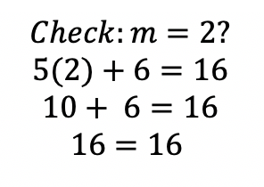

To solve a two-step equation, you must do two calculations per equation to get to the answer,
Typically step one is to undo the addition or subtraction.
Step two is to undo any multiplication or division in the problem. This will result in the final answer.
Two-step equations are usually created by taking one-step equations and adding or subtracting a number to both sides. Usually the multiplication problems are used from the one-step equations to produce the two step equation.
Let's look at an example:

The answer is m = 2.
Let's look at an example:
The answer is d = 3.
Let's look at an example:
The answer is r = 3.
Let's look at an example:
The answer is w = 4.
Let's look at an example:
The answer is x = 3.
Try the following examples. Be sure to check your solution.
1) 4x + 8 = 20
2) 3w - 6 = 6
3) 6t + 4 = 34
4) 5r + 6 = 41
5) -2w + 5 = -7